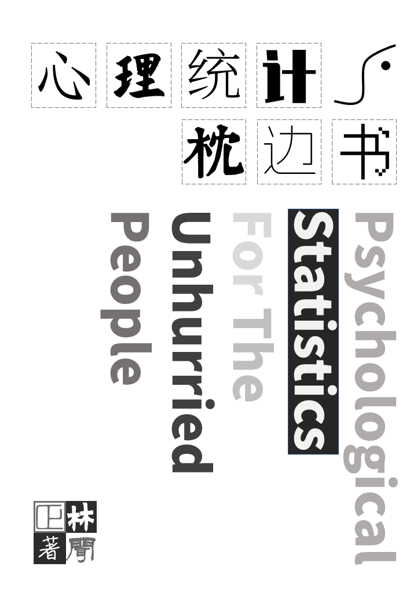

Psychological Statistics for the Unhurried People
A Bedside Companion to Psychological Statistics
![]()
Psychological Statistics for the Unhurried People

Please note that this English edition is currently an AI-assisted preliminary translation draft. It has not yet been fully checked against the Chinese manuscript, so passages may be abbreviated, omitted, or inaccurate; wording, cultural references, examples, and even some technical explanations may need correction. Many jokes and examples also depend on the cultural context of mainland China.
Once the entire Chinese manuscript is complete, I plan to review and rewrite the English edition, adapting examples and explanations for international readers. Until then, please treat the Chinese edition as the authoritative text and let me know if you find discrepancies. Thank you for your patience and understanding!
Website Migration
Due to the sunset of the bookdown.org service (see https://posit.co/blog/bookdown-org-sunset/), this book has migrated to Posit Connect Cloud at: https://linwz-psychstats.share.connect.posit.cloud/ .
Preface
The immediate motivation for writing this book was quite simple: I wanted to leave some trace of my personal website (https://www.linwz.com) across the Chinese internet. Earlier this year, when I tried to update my faculty bio on my university’s official department webpage, the ever-tightening administrative review process simply scrubbed out my personal link. To make matters worse, despite having submitted my personal site to domestic search engines years ago, it was never properly indexed. As a direct result, prospective students searching online couldn’t find my website, my student recruitment criteria, or any of my fine personal virtues.
Just then, my colleague and close friend Dr. Yujun Li gave me an epiphany. His epic volume written in between his teaching hours, Welcome | R Language: From Fundamentals to Advanced, actually ranked high on search engines! Thus, to provide a welcoming window through which prospective undergraduate and graduate students can find my website and learn about me as an advisor, I decided to pull together a book as well. Yes, I wrote this book for you—so you’d better read every single word of it (staring_intently.gif).
The next question was: what on earth should I write about? By training, I am an unassuming psychology worker specializing primarily in personality and social psychology. To advise professional master’s students (and address practical social issues), I also dabble in managerial psychology and consumer decision-making. Yet in all those fields, I couldn’t squeeze out a single publishable word. Working as a researcher in those areas, I keenly feel my limitations and lack the audacity to bluff. However, since I also teach a methods and statistics course on the side, inspired by Dr. Yujun Li: while I walk on eggshells in my own research discipline, I can strike with full fury in a field where I am thoroughly non-expert (chuckles). And so, the theme of this book is statistics.
If this so-called statistics book has any genuine advantage over the textbooks penned by seasoned experts, it must be my lack of expertise. As everyone knows, when learning anything new, learning from geniuses is thoroughly ill-advised. They will only tell you: “There’s nothing difficult about this; just take a look and you’ll get it.” My distinct advantage is that I (probably) understand readers’ confusion much better. From the perspective of an outsider, I can walk with you through psychological statistics (and quantitative methods in neighboring disciplines) from the ground up.
In short, this is not a traditional statistics textbook; at most, it is a bedtime companion or popular science read. True to its name, I hope it is a book you can pick up in your spare time, browse before sleep, and find a dash of amusement along the way. Of course, you may also treat it as a cure for insomnia—after all, who hasn’t felt sleepy while studying statistics? Stephen Hawking noted in A Brief History of Time that someone warned him: “Every equation included will halve the book’s sales.” Fortunately, I have no sales ambitions for this book whatsoever, which frees me to shamelessly show off my idiosyncratic misunderstandings of equations at every opportunity. Yes, this is a popular science read packed with mathematical symbols, without any guarantee of conventional textbook authority. In no circumstance should it be used as an official reference manual. If you need a rigorous, in-depth, and authoritative textbook, I warmly recommend Dr. Yujun Li’s magnum opus Linear Model. I hope our two works will complement each other to some extent—though I won’t bend my writing style to flatter his. Another top recommendation is Andy Field’s Discovering Statistics series, which remains second to none for undergraduate foundational statistics.
This book uses R as its statistical workbench; statistical tests are implemented through executable R code. Throughout the early chapters, I provide line-by-line comments to explain what each line of code accomplishes. You are equally free to skip the code entirely and examine the resulting output. If you seek an exhaustive coding handbook for R, do consult Dr. Yujun Li’s aforementioned bestseller1.
Content-wise, this book targets intermediate statistical concepts. Although I review necessary prerequisites, my ideal reader is a student in psychology or related social sciences who has taken an introductory statistics course and possesses a basic intuition for what ANOVA and regression do. You can treat it as an enjoyable supplement to an introductory course, or as a bridge to “advanced” statistical modeling.
I would like to express my heartfelt gratitude to the teachers who guided me along the path of statistics: Prof. Hongyun Liu, Dr. Fenfang Tsai, and Dr. Mike Cheung (in chronological order of when I took their courses). Fortunately, none of them anticipated my future audacity to author a statistics book, sparing me the admonition Master Subhuti gave the Monkey King: “Go forth, but wherever you cause havoc, never tell anyone you were my disciple! Utter a single word, and I will cast you down to the Netherworld forever!” Because they have not yet seen this book, I can still gratefully list their names here. Even as of writing this preface, any insight, logic, or idea of value in this work inevitably traces back to the generous statistical training they bestowed on an ordinary student like me. Any error or misunderstanding is entirely my own fault for not paying closer attention in class. If this book turns out reasonably coherent, all credit (and all blame for lingering typos) must go to our review editor Dr. Yujun Li, who kindly agreed to vet the manuscript. Please extend your generous forbearance to him, and don’t hesitate to email me if you spot errors.
Finally, let me reiterate that my personal homepage is https://www.linwz.com. It currently hosts our research group’s recruitment info and open resources. If I am fortunate enough to finish this entire manuscript, I will host the English version, along with complete PDF and ePub editions, right there to hopefully rustle up a little web traffic.
This work is licensed under a Creative Commons Attribution-NonCommercial-NoDerivatives 4.0 International License. Illustrations in the text, except for charts generated by R code, were created with the ChatGPT web interface unless otherwise noted.
This book is currently under active construction, and several chapters are still in progress.
Because I periodically revisit and revise earlier sections, I log modification highlights below for readers’ convenience. Tracking began on 2025-10-14, currently covering Chapters 1–4:
- 2025-10-14: In Chapter 4, added “Food for thought: A discussion on planned vs. post-hoc comparisons”.
- 2025-10-15: In Chapter 4, introduced fractional coding choices in contrast coding.
- 2025-10-18: In Chapter 4, introduced coding methods for unbalanced sample sizes; refined the dataframe and model numbering conventions in Chapter 4.
The search query was his own name, obviously.↩︎